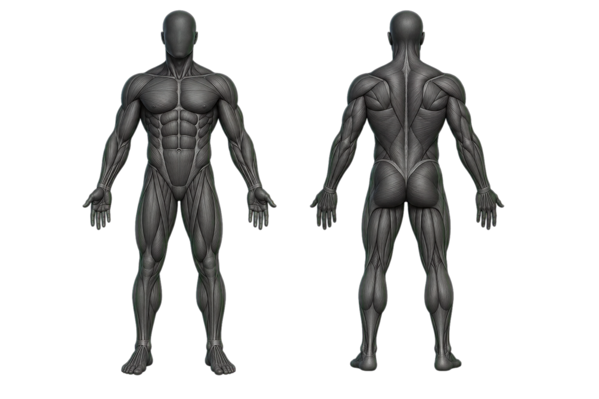

Aucun point ne peut être perdu. Les jours de repos font partie du plan.
Séance du jour
Ton entraînement
🏋️
MacroFlow prépare ton prochain entraînement.
Les charges restent modifiables.
Macros
Deux pressions
Ajouter sans tout recommencer
Local
Répète un repas récent ou cherche un aliment. Tu confirmes la portion avant l’ajout.
Tes raccourcisSelon ton historique
Repas
0 aliment
● Analyse locale · photo privée
Photographie ton repas.
MacroFlow reconnaît les aliments, réutilise tes portions pesées et te propose tes repas habituels sans recommencer.
1 Photo2 Analyse3 Vérification
◎
Pour un meilleur résultatPrends l’assiette entière du dessus, avec une bonne lumière.
✓
Photo prêteVérifie que l’assiette entière est visible, puis lance l’analyse.
Assiette utilisée
L’estimation utilise une assiette standard de 27 cm.
Vérifie avant d’ajouterPour un nouvel aliment, inscris le poids de la balance puis touche « Vérifier cette portion pesée » une seule fois.
Options avancéesContour, mesure précise, deuxième photo et assiettes
100 % localaucune photo envoyée
~55 Mopremière activation
Corrigeablegrammes et ingrédients
1
Contour de l’assietteAjuste seulement si le cercle vert est clairement trop grand ou trop petit.
2
Mesure manuelleUtilisée seulement si aucune assiette enregistrée n’est sélectionnée.
3
Deuxième vue facultativeUne photo à 45° peut améliorer la hauteur des aliments empilés.
Enregistrer une assiette
Enregistre une assiette une seule fois. La photo vide sert à reconnaître son rebord; elle n’est pas conservée.
Une photo ne révèle pas l’huile absorbée, les sauces cachées ni la recette exacte. MacroFlow ne présente une portion comme vérifiée que lorsqu’elle vient d’un poids que tu as confirmé.
Le scanner principal ne fonctionne pas?Ouvrir le scanner classique
⌁
Scanne ton assiette
L’image est analysée sur ton appareil. Tu confirmes ensuite l’aliment et la portion.
Résultats
Choisis le bon
Recherche locale parmi 2023 plats reconnus et les aliments courants de MacroFlow.
Confirmer le repas
Les valeurs sont une estimation de départ. Tu peux tout corriger avant d’ajouter.
MacroFlow · Plan personnel
Bienvenue10 %
Étape 1 sur 10 · Bienvenue
Ton plan complet commence par toi.
En quelques minutes, MacroFlow va créer ton entraînement et tes objectifs de calories et macros. Tout restera sur cet appareil.
Chaque question modifie réellement tes calories, ton horaire, le choix des exercices ou la prudence du départ. Ta progression est sauvegardée automatiquement et toutes les réponses resteront modifiables.
Étape 2 sur 10 · Besoins énergétiques
Ton point de départ physique.
Ces mesures donnent seulement une première estimation des calories. MacroFlow la recalibrera ensuite avec l’évolution réelle de ton poids.
Cela change seulement les champs affichés; les calculs restent identiques.
Pour 6 pi 1 po : entre 6 dans pieds et 1 dans pouces. Tu peux aussi écrire 6,1 dans pieds et laisser pouces vide.
Cette réponse ajuste l’estimation des calories selon la marche, l’école, le travail et le temps passé assis.
Étape 3 sur 10 · Expérience réelle
D’où est-ce que tu pars?
Le nombre d’années ne suffit pas. La régularité récente et l’aisance technique déterminent surtout la prudence du départ.
Cette réponse situe ton expérience générale, mais ne décide pas seule de ton niveau.
Une reprise récente mérite moins de volume au départ, même après plusieurs années d’expérience.
MacroFlow s’en sert pour choisir la marge d’effort et la prudence des premières semaines.
Étape 4 sur 10 · Objectifs
Qu’est-ce que tu veux vraiment obtenir?
Ton objectif physique règle les calories; ton objectif d’entraînement règle le volume, les répétitions, le repos et l’ordre des exercices.
Cette réponse règle uniquement le point de départ des calories et des macros.
Cela modifie les répétitions, les temps de repos et l’importance des exercices principaux.
Muscles prioritaires — maximum 2Ils recevront plus d’attention, pas automatiquement un volume extrême.
Exercices sur lesquels tu veux surtout progresser — maximum 2, facultatifIls seront favorisés et placés plus tôt dans la séance lorsqu’ils correspondent à ton matériel. Recherche n’importe quel exercice du catalogue.
Étape 5 sur 10 · Horaire
Un plan qui rentre dans ta vraie semaine.
L’application choisira une structure et espacera les séances parmi les journées possibles.
Ce nombre fixe la fréquence possible, mais MacroFlow choisira ensuite la structure et l’ordre des journées selon ton objectif, la récupération musculaire et tes autres activités.
Quels jours sont normalement possibles?Choisis tous les jours possibles; MacroFlow retiendra la combinaison qui espace le mieux tes séances.
C’est une limite disponible, pas une durée à remplir. MacroFlow retirera d’abord les éléments moins importants si nécessaire, mais gardera une séance longue lorsqu’elle est réellement utile.
Cela sert seulement à placer tes séances dans la semaine. Deux jours convient à la plupart des horaires.
Étape 6 sur 10 · Activités
Le gym n’est pas toute ta semaine.
Course, sport, escalade et travail physique utilisent aussi ta capacité de récupération.
Une charge élevée peut réduire légèrement le volume des muscles déjà très sollicités.
Quelles activités sollicitent ton corps?Le type d’activité indique quels muscles risquent déjà d’être fatigués. Tu peux en choisir plusieurs.
Quels jours ces activités ont-elles généralement lieu? — facultatifCes jours permettent d’éviter, lorsque ton horaire le permet, une séance très exigeante pour les mêmes muscles juste avant ou le même jour. Laisse vide si ton horaire change toujours.
Étape 7 sur 10 · Équipement
Seulement les exercices que tu peux faire.
Choisis un point de départ, puis corrige la liste si ton gym ou ton installation est différent.
Ce choix préremplit le matériel; vérifie ensuite chaque élément, car le générateur suivra cette liste exactement.
Quel équipement peux-tu réellement utiliser?Règle stricte : si un élément n’est pas coché, aucun exercice qui l’exige ne peut entrer dans ton plan.
Postes et machines disponiblesCoche seulement les postes présents. « Gym complet » les présélectionne, mais tu peux retirer ceux qui manquent.
MacroFlow utilisera cet incrément seulement après avoir atteint le haut de la plage de répétitions. Si tu ne sais pas, garde automatique.
Étape 8 sur 10 · Préférences
Un bon plan doit te donner envie de revenir.
Les préférences ne remplacent pas un programme équilibré, mais elles aident MacroFlow à choisir entre plusieurs exercices efficaces.
Ce choix départage les variantes compatibles avec ton matériel; il ne supprime pas un mouvement nécessaire.
Un programme stable facilite la comparaison des progrès; davantage de variété peut être plus motivant.
Exercices que tu aimerais retrouver dans ton plan — maximum 5, facultatifIls seront favorisés seulement s’ils correspondent au matériel, au mouvement prévu et à la durée de la séance.
Exercices que tu ne veux pas dans ton plan — facultatifMacroFlow choisira une autre variante du même mouvement. Pour une douleur, utilise plutôt l’étape Sécurité.
Étape 9 sur 10 · Récupération et sécurité
La fatigue change le bon dosage.
Ces réponses rendent le départ plus prudent si nécessaire. MacroFlow ne diagnostique jamais une blessure.
Si cela arrive souvent, le volume accessoire commencera plus bas. « Rarement » n’augmente pas artificiellement le volume.
Un sommeil très court rend le départ plus conservateur; cette réponse ne remplace pas tes performances réelles.
Un stress élevé peut réduire légèrement les exercices accessoires au départ.
MacroFlow peut exclure un type de mouvement connu, mais ne peut pas diagnostiquer une douleur.
Mouvements à éviterObligatoire si tu as choisi « mouvements connus à éviter ».
Étape 10 sur 10 · Vérification
Voici ce que MacroFlow a compris.
Relis le résumé. Le programme et les macros seront créés ensemble sur l’appareil avec des règles transparentes, sans IA payante.
Le plan est un point de départ, pas une garantie ni un avis médical. La technique, la régularité, l’alimentation et la récupération restent déterminantes.
✓
Profil analysé · Plan local
Ton programme est prêt.
MacroFlow a relié ton horaire, ton matériel, tes préférences et ta récupération.
MacroFlow Training100 % local
Construis ton programme
Programme adapté à ton niveau, tes jours disponibles et ta récupération. Aucune IA payante.
Coach du jour
Décide avec tes données du jour
🧭
Le plan donne la structure; ce court bilan choisit la bonne dose sans réécrire ton programme.
La recommandation est expliquée et rien ne change sans ta confirmation.
Ton plan personnel
Profil local
Prêt pour la séance?
Choisis une journée de ton programme pour commencer.
Séance en cours
Jour 1
00:00
0 sur 0 sériesExercice 1
0 %
Repos01:30
Carte corporelle interactive
Sollicitation musculaire estimée
Les couleurs évoluent selon tes séries réellement enregistrées, le RIR et le temps écoulé.
À jour

FaceDos
Très récenteÉlevéeModéréeFaibleAucune trace récente
Important : cette carte estime une sollicitation, pas la réparation biologique du muscle. Une douleur inhabituelle, une baisse nette de performance ou ton ressenti réel comptent davantage que la couleur.
Comment MacroFlow l’estime
1Séries primaires et secondaires
2Effort déclaré avec le RIR
3Temps depuis chaque séance
4Sommeil, stress et récupération déclarés
La couleur diminue graduellement. Elle ne repose donc pas sur une règle rigide du genre « chaque muscle récupère exactement en 48 heures ».
Données réelles du programme
Bilan Training
MacroFlow compare les performances à effort semblable, la régularité des séries et ton état de récupération. Aucun changement ne sera appliqué sans confirmation.
Historique des bilans
Aucun bilan pour le moment.
Records personnels
Séances récentes
✅
Séance terminée
Même rôle dans la séance
Remplacer l’exercice
Choisis une variante compatible avec ton matériel.
⏳
Séance incomplète
Décision du jour · environ 45 secondes
Comment arrives-tu à la séance?
Réponds selon maintenant, pas selon ta semaine idéale. Ces signaux complètent tes performances; ils ne diagnostiquent rien.
Progression d’élan
Régularité, pas perfection
Niv. 1
Les points apparaissent seulement quand une vraie habitude est enregistrée.
Étapes débloquées0 obtenue
Nutrition, poids et habitudesRepas, pesées et bilan hebdomadaireOuvrir
Cette semaine
0 repas enregistrés
🔥0jours d’élan
⚡0XP d’élan
🏋️0séries
🥗0repas
Tendance réelle
Suivi du poids
Idéalement le matin, dans des conditions semblables. Quatre mesures ou plus par semaine suffisent. MacroFlow utilise des moyennes; si la pesée devient stressante, tu peux mettre ce suivi sur pause.
Après deux semaines de données
Bilan hebdomadaire
MacroFlow attend assez de pesées avant de recommander un changement.
Historique des bilans
Aucun bilan pour le moment.
Objectifs quotidiens
Protection automatique
Tes données restent récupérables
🛟
MacroFlow garde jusqu’à 5 points de récupération locaux. Un nouveau point est créé automatiquement lorsqu’il y a des changements importants, au maximum une fois par jour.
Dernier point : aucun0/5 conservés
Bêta de précision
Validation du scanner
0/20
Chaque fois que tu corriges une portion avec une balance puis que tu la vérifies, MacroFlow mesure automatiquement son erreur. L’objectif est 20 portions réelles avant la v1.0.
0portions comparées
—erreur moyenne
À commencerniveau actuel
État de l’application
MacroFlow v35 stable
DémarrageAccueil légerScanner localChargé seulement à l’ouvertureDonnéesLocales et exportables
Données
🔒
Local et privé
Les repas, objectifs et entraînements restent dans Safari sur cet iPhone.
Restauration locale
Vérifie la sauvegarde
Voici ce qui sera remis sur cet appareil.
0repas
0séances
0assiettes
Les données locales actuelles seront remplacées. MacroFlow gardera une copie temporaire pour revenir en arrière si l’import échoue.